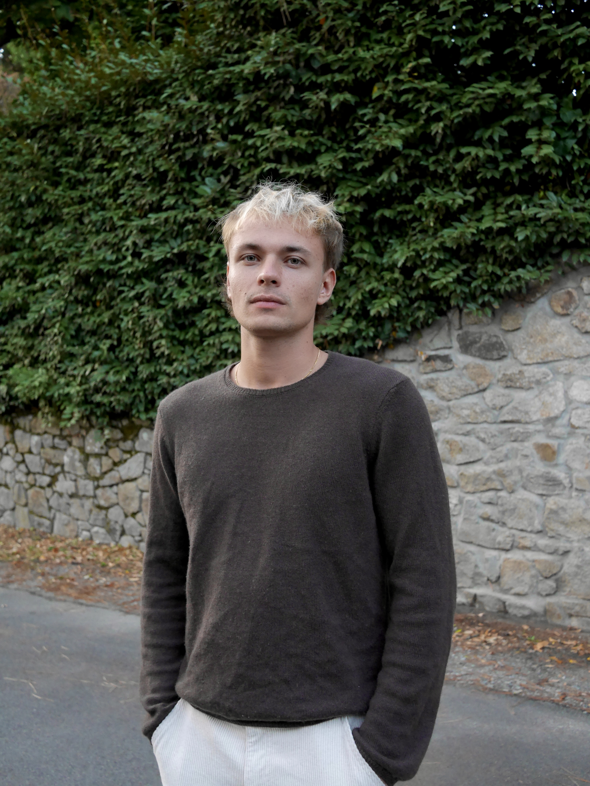

Incoming PhD student in applied maths & machine learning
Benjamin Séguin
Incoming PhD student · MMSID team, LIGM, Université Gustave Eiffel
About me
I am an incoming PhD student in the MMSID team at LIGM (Université Gustave Eiffel, France), supervised by Clément W. Royer. My work sits at the interface of nonconvex optimization, geometric machine learning, and mathematical imaging. I am interested in geometry-aware optimization algorithms that come with complexity guarantees and their application to the interesting symmetries that arise in imaging problems.
I am currently doing a research internship in the MILES team at LAMSADE, Université Paris Dauphine-PSL, also with Clément W. Royer as part of my M.Sc. in Applied Maths and Computer Science (IASD) at Université PSL.
Before turning to machine learning, I completed an M.Sc. in Financial Engineering at HEC Montréal, where I worked with David Ardia on computational methods for econometric inference, and spent a year in quantitative research at La Caisse.
Research interests
- Nonconvex optimization
- Geometric machine learning
- Mathematical imaging
- Optimal transport
- Inverse problems
Selected work
Recent publications
-
2026
Nonlinear Conjugate Gradient with Perturbed Heavy-Ball Saddle Escape: Complexity and Local Convergence
Master's thesis manuscript
A first-order method that pairs a safeguarded nonlinear conjugate gradient descent phase with a perturbed heavy-ball escape phase, reaching an approximate second-order stationary point with high probability using gradient evaluations only.
-
2025
-
2025
-
2025